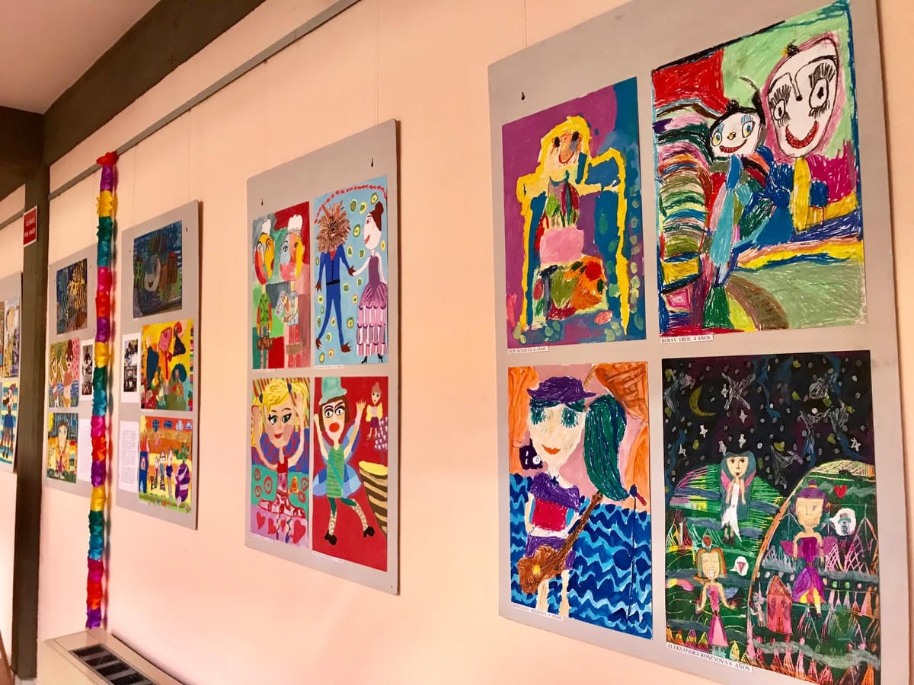

Your text goes here
Школа по изобразително изкуство ''АРТЕЯ''
Школа за изобразително изкуство ''АРТЕЯ'' - град Търговище е създадена през 2008г. като извънучилищна форма за обучение на деца и ученици от различни възрасти в областта на изящните и приложно-декоративните изкуства. В Школата се осъществява обучение по рисуване, графика, живопис и приложно изкуство/ рисувана коприна, пластика от хартия, декупаж, моделиране с глина, рисувано стъкло и др/. Обучението е насочено към развиване на изобразителните умения на учениците, чрез творческо взаимодействие с професионален художник-педагог и запазване на артистичната индивидуалност на всяко дете.

Кандидатстудентска подготовка за ученици от 9 до 12 клас
- по специалности за ВУЗ: